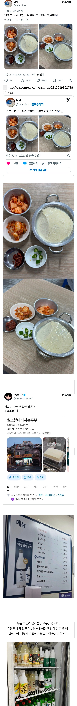

저기 이미 주말에 미어터질걸
아차산내려오시는분들 단골집.
두부에 김치에 막걸리까지 걸치면 그냥 좋겠네
막걸리도 3천원 받으시네 뭐남지
본가근처라 포장도하고 매장에서도 자주먹었는데 김치는 내입맛에는 별론데 두부는 그냥먹어도 맛있음 문제는 두부입맛이 높아져서 다른 두부를 먹기가 힘듦...근데 저기 옛날매장아닌가?
두부인줄 알았지만 계란찜이었다 엔딩을 기대했는데 진짜 두부였네 ㄷㄷ
어디길래 다알고있냐
잡식맨에서 봤던 곳이넹
갓나온 두부 진짜 개 맛잇는데
진짜맛있겠다
계란찜이 아니라 진짜 두부였네
막거리는 느린마을미만잡
여기 두부도 좋지만 새우젓이 존나마시슷ㅁ
아차산 갈때 한번씩 먹는데 괜찮음. 문제는 줄서야함.
저거 양은냄비 다 벗겨진거임?
요즘은 모르겠고 예전에 초당동 두부공장에 새벽에가면 저거 10배정도 되는 양의 순두부를 1800원에 두꺼운 큰비닐에 뜨끈뜨끈한 채로 팔았다 맛도 진짜 좋았음
10배 1800원은 시발 ㅋㅋ 상상이 안되네
들린다 들려 할아버지들의 막걸리 소리
계란찜 아녀?
냄비두부에 막걸리라니 저게 섹스지